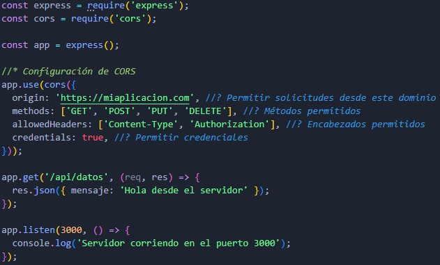

CORS
CORS es un mecanismo de seguridad implementado en los navegadores para controlar cómo se accede a los recursos de una aplicación web desde otro dominio. Este mecanismo se asegura de que solo los orígenes autorizados puedan realizar solicitudes a tu servidor, protegiendo tus datos de accesos no deseados.
Contexto y necesidad de CORS
En el pasado, los navegadores permitían que cualquier sitio web hiciera solicitudes a cualquier otro sitio web. Esto permitía que un sitio web malicioso pudiera hacer solicitudes a un sitio web de confianza en nombre del usuario, lo que permitía a los atacantes robar información confidencial. Para evitar esto, los navegadores implementaron CORS, que restringe las solicitudes entre diferentes dominios.
En los navegadores, el Same-Origin Policy (Política del Mismo Origen) restringe el acceso a los recursos para evitar ataques maliciosos. Bajo esta politica solo las solicitudes desde el mismo protocolo, host, y puerto que el recurso solicitado son permitidas.
Cómo Funciona CORS
CORS funciona añadiendo encabezados HTTP que permiten a los servidores definir quién puede acceder a sus recursos. Cuando un servidor recibe una solicitud, verifica si el origen de la solicitud está en la lista blanca de orígenes permitidos. Si lo está, el servidor responde con un encabezado Access-Control-Allow-Origin que contiene el origen permitido. Si no lo está, el servidor responde con un error.
El servidor también puede responder con otros encabezados CORS, como Access-Control-Allow-Methods y Access-Control-Allow-Headers, que especifican los métodos HTTP y los encabezados permitidos en las solicitudes.
CORS permite que un servidor declare explícitamente qué dominios, métodos HTTP, encabezados y credenciales son permitidos para interactuar con él.
- Cabeceras de Respuesta HTTP (Response Headers):
- El servidor responde con cabeceras específicas para indicar qué solicitudes están permitidas.
- Preflight Requests (Solicitudes Preliminares):
- Para ciertas operaciones como PUT, DELETE o cuando se utilizan encabezados personalizados, los navegadores envían una solicitud previa (con el método OPTIONS) para verificar los permisos.
Cabeceras Importantes de CORS
Del lado del servidor (Respuesta)
- Access-Control-Allow-Origin:
- Indica qué dominios pueden acceder a los recursos del servidor.
- Access-Control-Allow-Methods:
- Indica qué métodos HTTP están permitidos en las solicitudes.
- Access-Control-Allow-Headers:
- Indica qué encabezados personalizados están permitidos en las solicitudes.
- Access-Control-Allow-Credentials:
- Indica si las solicitudes pueden incluir credenciales (como cookies o autenticación HTTP).
- Access-Control-Max-Age
- Indica cuánto tiempo (en segundos) la respuesta puede ser almacenada en caché.
Del lado del cliente (Solicitud)
- Origin:
- Indica el origen de la solicitud.
- Access-Control-Request-Method:
- Indica el método HTTP de la solicitud.
- Access-Control-Request-Headers:
- Indica los encabezados personalizados de la solicitud.
Tipos de Solicitudes CORS
Simple Requests (Solicitudes Simples)
Las solicitudes simples son aquellas que cumplen con ciertas condiciones y no requieren una solicitud previa. Para ser considerada una solicitud simple, la solicitud debe cumplir con los siguientes criterios:
- El método HTTP es GET, HEAD o POST.
- Los encabezados personalizados permitidos son limitados.
- No incluye credenciales como cookies.
Flujo:
- El cliente envía una solicitud al servidor.
- El servidor responde con un encabezado Access-Control-Allow-Origin que contiene el origen permitido.
- El cliente recibe la respuesta y procesa los datos.
Preflight Requests (Solicitudes Preliminares)
Las solicitudes preliminares son aquellas que no cumplen con las condiciones de una solicitud simple y requieren una solicitud previa. Para ser considerada una solicitud preliminar, la solicitud debe cumplir con los siguientes criterios:
- El método HTTP es PUT, DELETE o utiliza encabezados personalizados.
- Incluye credenciales.
Flujo:
- El cliente envía una solicitud previa (con el método OPTIONS) al servidor.
- El servidor responde con los encabezados CORS permitidos.
- El cliente envía la solicitud real al servidor.
- El servidor responde con los datos solicitados.
Nota: Si la solicitud incluye credenciales (cookies, tokens), el servidor debe incluir la cabecera Access-Control-Allow-Credentials: true. Además Access-Control-Allow-Origin no puede ser *. Debe ser un dominio explícito.
Errores Comunes de CORS
- Access-Control-Allow-Origin no configurado correctamente:
- Si el origen del cliente no coincide con el valor de esta cabecera, el navegador bloqueará la solicitud.
- Falta de respuesta a la solicitud OPTIONS:
- Si el servidor no maneja el método OPTIONS, las solicitudes preliminares fallarán.
- Configuración de credenciales incorrecta:
- Usar * en Access-Control-Allow-Origin mientras se permite Access-Control-Allow-Credentials
Ejemplo:
